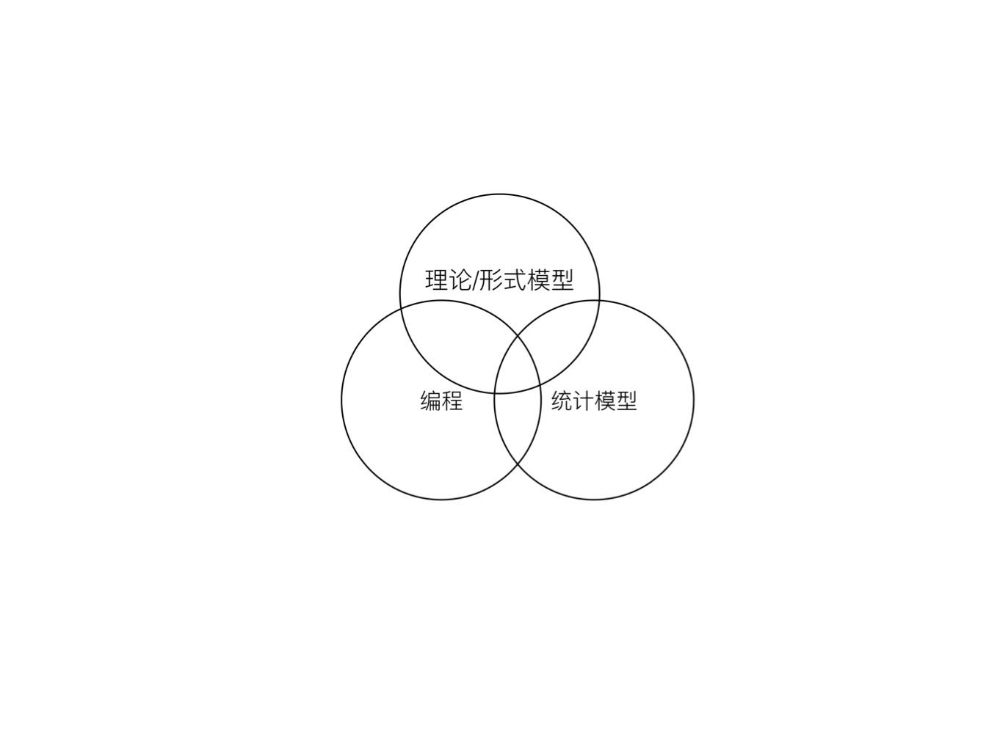

1 重塑经济学研究的流程
1.1 人工智能时代的社会科学研究：机遇与挑战
1.1.1 社会科学的三圈分类

我们可以用上面图中的三个圈对社会科学相关研究进行一个粗略的分类。
从研究方法与工具上，拉近了自然科学与社会科学的距离，我们要花一点时间
我们查阅了已出版的关于人工智能与社会科学的，这部分
并没有涉及到本质的核心
扩展先前讲义的内容即可 要首先讲一下科学演化和社会科学的一些认知，我们举感冒的例子 话说张老爷子写了一首诗：
实际上，要做哪些，我们是要还原的东西是什么？
引出数据科学与数据工程
1.1.2 AI智能发展的三要素
人工智能，由于这个很有想象空间的的名字，导致不明就里的围观群众对其赋予了太多浪漫的或者恐慌的想象。这其中社会科学的学生和老师不在少数。为了理解人工智能对于社会科学的影响，我们就需要卸下对人工智能的想象。
人工智能之前还有一个名字，机器学习，不过感觉对于我们解释人工智能并没有什么帮助。说白了，目前的人工智能技术能实现的功能就是一个分类器，例如，预测一个学者能否入选杰出青年科学基金。大家至少都接触过一个分类器，即0-1变量的Logistic回归，在这个回归中，我们可以使用候选学者的学历、导师、工作单位、性别、年龄、发表学术论文的情况、获奖情况（据说现在特别看重）等作为自变量，以是否真正入选“杰青”作为因变量。如果你可以看懂这个例子，那么恭喜你，已经可以说自己是人工智能专家了，因为实际上很多专家连回归都没有跑过。所以，人工智能实际上就是一个高级的0-1回归，高级的地方在于人工智能的算法不仅可以使用非线性的模型，更在于其实现了及其高且稳健的分类准确率，从而达到商业应用的水平。不同人工智能算法的差别主要在与分类时候使用的方法，例如，人工神经网络特别像结构方程模型，随机森林就是一堆二叉树。
由此可见，人工智能的基础学科有且只有两个，统计学和计算机。前者解决随机空间中不同模型的收敛性与一致性问题，后者解决计算难度的问题。所以，如果一个学校这两个学科都不好，那他的人工智能学科大概率是骗钱的。
但是，人工智能在过去3-5年的蓬勃发展并不是得益于统计学的理论突破，而是得益于计算机工程技术方面的发展，主要是算料、算力以及算法的突破。第一、算料，即数据。传感器技术的发展，互联网的发展使得数据的采集越来越及时，积累越来越多，数据储存和运输的成本也越来越低。这就是所谓的大数据，在人工智能火爆之前，流行于各种媒体经济学家口中的名词，一夜之间，连几千个人的数据描述都可以成为“大数据”了。实际上大数据是一个商业概念，而不是一个学术概念，因此大数据很难界定，也存在太多误用。但是，无论如何从任何角度考察，大数据都必须要大，至少可以认为一台笔记本电脑可以打开的一定不是大数据。以这个标准来看，是否误用就很容易鉴定出来了。第二、算力，主要是讲计算机集群。这方面的突破在于分布式运算，如果追求单个超级计算机的提升，迟早会遇到物理定律的瓶颈。而分布式运算可以将全球各地的大量的小型乃至微型计算机联合起来使用，从而大大降低了大规模运算的门槛，达到了一百万个臭皮匠，肯定打死一个诸葛亮的水平。第三，算法。有了前两个条件作为基础，各种深度学习算法就可以大显神威，例如Alpha GO背后有一个极大的神经网络来辅助。就好比不考虑体重的拳击比赛都是耍流氓一样，以后围棋这类的智力运动也得考虑分级别竞争了，只不过分级的标准不是体重，也不是年龄，而是能耗。只有在一个能量级别上的竞争才是奥林匹克的。
1.1.3 AI对社会科学研究的冲击
从Alpha GO横空出世以来，人工智能以摧枯拉朽之势横扫了几乎所有学科，社会科学当然也不能幸免。面对人工智能的冲击，不同的人，站在不同的立场，做出了各种反应。很快就有人站出来讨论其发展对于各种社会科学的影响，包括促进社会科学研究转型，甚至重构社会科学的研究范式。当然有人指出人工智能与大数据不过如此。也有人趁势提出智能社会科学、计算社会科学等新兴学科。
作为经济学与公共政策的研究和教育从业者，直观感受到的AI的冲击主要来自于三个方面。
1.1.3.1 最直接的冲击是人的冲击
人工智能火爆之后最直接的冲击是突然涌来一帮计算机技术过硬的人抢社会科学研究的饭碗。拿着人工智能的工具来解决社会科学问题，“计算社会科学”这个大旗下就聚集了这批交叉学科北京，面对这样的“投降派”，和“抵抗派”
1.1.3.2 工具更新带来的恐慌
外来人员带来的一个直接影响就是工具，仿佛AI相比于我们熟悉的
1.1.3.3 对研究范式的冲击
今天写完这部分的内容
1.2 数据工程与数据科学
1.3 数据工程的四大原则
- 可复现性原则
- 模块化与正交分解原则
- 最佳工具原则
- 一次性原则
1.4 数据处理的灵魂：数据流
1.5 数据处理的钥匙：数据结构
1.6 数据工程师的工具箱
1.7 数据工程师的一天
1.8 数据工程(Data Engineering)
- 数据分析(Data Analysis)
- 商业智能(Business Intelligence)
- 数据科学(Data Science)
- 数据工程(Data Engineering)